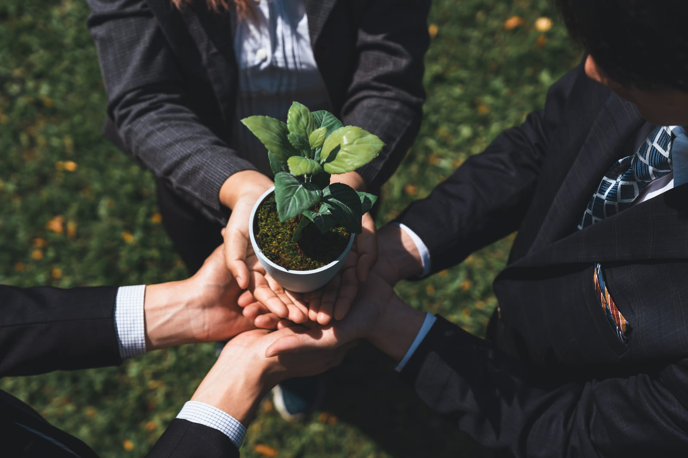

AflodayKurumsal Hizmetler
Kurumlara doğadan hizmet
Kurum kültürü ve çalışan yetkinlik gelişimi hedefiyle, koçluk yaklaşımıyla tasarlanan, konu odaklı doğa temalı atölyeler.
Hizmet hattı 01
Doğadan Deneyimsel Öğrenme Atölyeleri
Kurum kültürü ve çalışan yetkinlik gelişimi hedefiyle, koçluk yaklaşımıyla tasarlanan, konu odaklı doğa temalı atölyeler.
Katılımcıları günlük rutinde sık karşılaşmadıkları doğal malzemelerle buluşturarak zihne yeni kayıtlar açar, yıllardır etkinliği kanıtlanmış aktif öğrenme metoduyla hedeflenen kurum kültürü/yetkinlik konusunu derinleştiririz. Bilişsel ve fiziksel becerileri eş zamanlı çalıştırarak değişim, liderlik, yaratıcı düşünme, iletişim, iş birliği ve problem çözmede fark yaratırız.
Eğitimlerde oyunlaştırılmış aktif öğrenmeye imkanı sunan, somut çıktı yaratan, eğitim içi uygulama olarak yüz yüze veya Türkiye geneli online (kit gönderimi + canlı destek) uygulanır.
Doğadan Deneyimsel Öğrenme Atölyeleri
Mottolu Çerçeve Tasarım Atölyesi, Bitki Dikim Tasarım Atölyesi, Kavanoz Teraryum Tasarım Atölyesi, Çiçek Aksesuar Tasarım Atölyesi vb

Katılımcı & Kurum Faydası
Hizmet hattı 02
Doğadan Etkinlik Atölye Deneyimleri
Doğa temasını koruyan ama belirli bir mesaj/konu taşımayan, yaratıcılığa ve keyifli vakit geçirmeye odaklanan atölyeler — hedefimiz sadece çalışan motivasyonu.
Kurum ihtiyacına, mevsime veya özel günlere göre şekillenen dönemsel konseptlerle; motivasyon, özel gün etkinliği, iç iletişim ve işe adaptasyon projelerine katılımcıları doğaya yaklaştırarak onlara keyifli vakit geçirme imkanı sunar, eşlik ederiz.

01
Sürdürülebilirlik
- İleri Dönüşüm Kavanoz Teraryum Tasarım Atölyesi
- Bitki Akvaryumu Tasarım Atölyesi
- Kupa Bahçe Tasarım Atölyesi
02
İç iletişim → Motivasyon / dönemsel stres
- Mottolu Çerçeve Tasarım Atölyesi
- Kuru Çiçek Fanus Tasarım Atölyesi
- Minyatür Bahçe Atölyesi vb
03
Mevsim Konseptleri
- Sonbahar Konsepti - Bal Kabağı Sukulent Atölyesi
- Yılbaşı Kapı Çelengi Tasarım Atölyesi
- Hasır Şapka Tasarım Atölyesi vb
04
Özel Günler
- Babalar Günü Kokedama Atölyesi
- Kadınlar Günü Çiçek Aksesuar Atölyesi
- 23 Nisan Ulusal Egemenlik ve Çocuk Bayramı Doğadan Çocuk Hobi Atölyeleri (Mini Kavanoz Teraryum, Ahşap Kuş Evi Tasarım, İlk Bitkim Dikim Atölyesi vb)
- Sevgililer Günü Aşk Bahçesi Tasarım Atölyesi
- Çiçek Buket Tasarım Atölyesi vb.
05
Gönüllülük Atölyeleri
- Gönüllülük Eğitim Semineri + Çiçek Aksesuar Tasarım Atölyesi + ilgili derneğe bağış (kurumsal gönüllülük)
- Gönüllülük Eğitim Semineri + Saksısız Bitki Yetiştirme Atölyesi + ilgili derneğe bağış (kurumsal gönüllülük)
06
Ürün lansmanı
- Dekoratif Obje Tasarım Atölyesi (ambalajın tasarıma dönüşmesi)
- İlham veren Mini Ekosistem Teraryum Atölyesi vb.
Etkinlik kategorileri
Hizmet hattı 03
Kurumsal Sosyal Sorumluluk Projeleri ve Proje Danışmanlığı
Bugün kurumlara sunduğumuz danışmanlık; teorik önerilere değil, sahada sınanmış deneyime, paydaş yönetimine ve ölçülebilir sosyal etki üretme yaklaşımına dayanıyor.